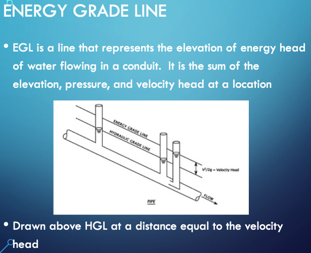
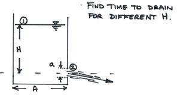
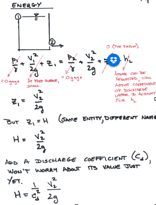
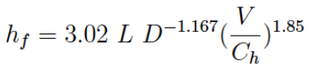
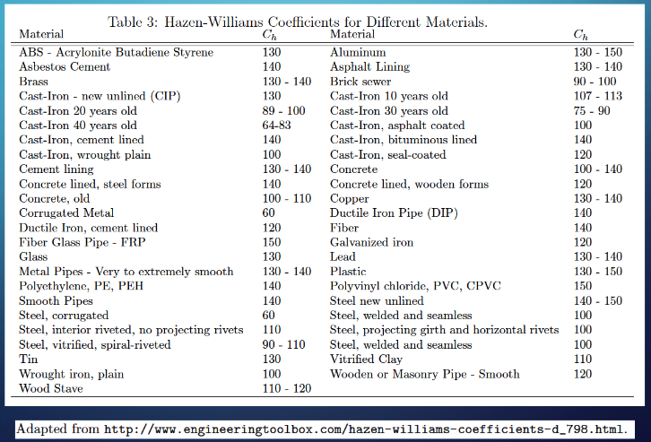
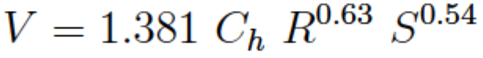
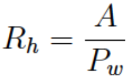
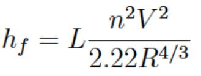
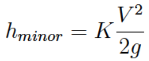

5. Pipeline Head Loss#
Course Website
Readings#
Videos#
Lesson Outline#
topic1
topic2
topic3
Energy and Friction#
Water moves from higher to lower energy
Path of least resistance
Head is energy per unit weight of a fluid
Pumps are used to add energy to move water to a higher elevation or over a barrier
Gravity flow: Change in elevation provides the required energy
Pressure flow: Change in pressure provides the required energy
Flowing water encounters friction/resistance; hence there is loss of energy along a flow path. The mean section velocity is related to cross sectional flow area and volumetric discharge as:
Continunity at Different Sections#
The continunity (conservation of mass) across two cross-sections of pipe as shown

is \(A_1 V_1 = A_2 V_2\). It is a statement that discharge is the same in each portion of pipe unless there is a loss somewhere.
Continunity at Junctions#
A junction is a location where two or more conduits join together. By convention (collective agreement) flow into a junction is a positive value, flow out from a junction is a negative value. External demands are conceptualized as flow out of the junction. While uncommon,flow injected into a junction it would be treated as a negative demand (in most computation tools!)

The continunity equation for the junction depicted above is \(Q_1 - Q_2 - Q_3 - D = 0\) An easy way to remember continunity is \(In - Out = 0\)
Energy Equation#
The energy equation (modified bernoulli equation) relates the total dynamic head at two points in a system, accounting for frictional losses and any added head from a pump.

\(h_L\) = head losses (pipe loss + fitting losses)
\(h_p\) = added pump head
\(h_t\) = head loss to a turbine
The parts of the equation are illustrated below
The left-most group is the total energy in the lower reservoir. The pump head provides the energy to lift from the suction side of the pump to the upper reservoir. The water is physically moving upward in the suction pipe, while hydraulically flowing downhill to some minimum at the pump. After the pump supplies additional momentum the water has increased energy to continue its uphill trek to the upper reservoir. The first group to the right of the equal sign is the total energy in the upper reservoir. The last group is the total head loss in the system.
Observe that the HGL and EGL in the system slope downward in the direction of flow; further observe that nearly all groups are dependent on the discharge rate; added head required changes with \(Q\) as does the head loss.
The hydraulic grade line (HGL) is depicted below as is the energy grade line (EGL)

We can combine continunity and energy to explain/predic common hydraulic behavior
Example: Time to Drain a Storage Tank#
Imagine an ordinary bucket (diameter = 1 foot) with a ½-inch hole drilled at the base of the bucket.
Problem Statement#
Develop an equation that estimates time-to-drain for different fill depths (with an unknown drainage coefficient). Use measured data to infer the drainage coefficient.

Sketch Situation; List Known Values#

The known values in this case are the tank area \(A\) from its given diameter, the outlet area \(a\) from its given diameter, and the starting depth \(H\).
List Unknown Values#
In this case the time to drain and the numerical value of a drainage coefficient that relates the constriction of the jet at the outlet. We can keep it as an unknown variable and use the observations to find a numerical value for this particular bucket.
Governing Principles#
Conservation of mass (Continunity)
Conservation of energy (Energy equation)
Solution#
First use continunity:

Then use energy:

Now apply analysis (that Calculus stuff!)

Continue to tidy up the equation
Now we can construct a tool using Computational Thinking (ENGR-1330) methods
def HofT(time,Cd,Ho,D,d,g): #create our depth vs time function
import math
A = 0.25*math.pi*D**2
a = 0.25*math.pi*d**2
K = math.sqrt(2*g)*(a/A)
HofT = (math.sqrt(Ho)-time*Cd*K/2)**2 # if inner part is <0, then will throw an error
return(HofT)
# now a quick test
Ho = 1.0 # one foot depth
D = 1.0 # one foot diameter
d = 0.042 # 1/2 inch diameter (in feet)
g = 32.2 # grabity in US unitz
Cd = 1
time = 139
print("Depth Remain at ",time," seconds is ",round(HofT(time,Cd,Ho,D,d,g),3)," feet")
Depth Remain at 139 seconds is 0.0 feet
Now put the function into a repetition structure and use trial-and-error to find a good value for Cd. The goal is for remaining depth to be zero for all cases.
D = 1.0 # one foot diameter
d = 0.042 # 1/2 inch diameter (in feet)
g = 32.2 # grabity in US unitz
Cd = 1.125 # Use 2, 1.5, 1.25, 1.125 will see values go up then down towards zero
Ho = [1.00,0.75,0.53,0.29,0.00] # table of observed depths
time = [127.85,106.41,84.71,57.94,0.00] # table of observed times
how_many = len(Ho)
print("For Cd = ", Cd)
for i in range(how_many):
print("Depth Remain at ",time[i]," seconds is ",round(HofT(time[i],Cd,Ho[i],D,d,g),3)," feet")
For Cd = 1.125
Depth Remain at 127.85 seconds is 0.0 feet
Depth Remain at 106.41 seconds is 0.0 feet
Depth Remain at 84.71 seconds is 0.003 feet
Depth Remain at 57.94 seconds is 0.006 feet
Depth Remain at 0.0 seconds is 0.0 feet
The example illustrates the combination of analysis and computation to find a discharge coefficient for a cylindrical tank. These kind of problems are especially fun when the tank geometry is weird and we normally use:
Storage-Elevation or Depth-Area tables.
Finite-difference type computations (rather than analytical functions)
Head Loss Models (for losses in closed conduits)#
Darcy-Weisbach#
The Darcy-Weisbach frictional head-loss model for pipe flow is
Frictional loss proportional to:
Length
Velocity\(^2\)
Inversely proportional to:
Cross sectional area
Loss coefficient (\(f\)) depends on
Reynolds number (fluid and flow properties)
Roughness height (pipe material properties)
Reynolds’ (\(Re_d\)) Number#
Find viscosity as function of temperature from table look-up at http://54.243.252.9/toolbox/fluidmechanics/WaterPropertiesUS/WaterPropertiesUS.html or http://54.243.252.9/toolbox/fluidmechanics/WaterPropertiesSI/WaterPropertiesSI.html or other source.
Darcy-Weisbach “\(f\)” Factor#
The friction factor is determined from a Moody Chart or Colebrook-White or Jain equation like:
A web-application with a roughness height database is http://54.243.252.9/toolbox/Databases/RoughnessHeight/RoughnessHeight.html
A web-application to compute friction factor given \(Re\) and material properties (\(k_s\)) is http://54.243.252.9/toolbox/pipehydraulics/FrictionFactor/FrictionFactor.html
Using the D-W model#
To compute headloss is straightforward, first organize your data:
Material type, lookup roughness height at http://54.243.252.9/cgi-bin/Databases/RoughnessHeight/RoughnessHeight.py or another source. Remember to cite the source.
Viscosity at desired operating temperature, lookup at http://54.243.252.9/toolbox/fluidmechanics/WaterPropertiesUS/WaterPropertiesUS.html or http://54.243.252.9/toolbox/fluidmechanics/WaterPropertiesSI/WaterPropertiesSI.html or another source. Remember to cite the source.
Use the pipe diameter and desired flowrate to compute a mean section velocity.
Compute the Reynolds number; use the equation or http://54.243.252.9/toolbox/fluidmechanics/ReynoldsNumber/ReynoldsNumber.html
Compute the friction factor; use the Moody Chart or Jain equation or http://54.243.252.9/toolbox/pipehydraulics/FrictionFactor/FrictionFactor.html
Finally compute the head loss as \(h_f = f \frac{L}{D}\frac{V^2}{2g}\)
Hazen-Williams#
The Hazen-Williams head loss model is for water only, while a bit contrived it is used in the USA extensively.

The model expresses frictional loss
proportional to Length
proportional to Velocity^(1.8)
Inversely proportional to cross section area (as hydraulic radius)
The Loss coefficient (\(C_h\)) depends on
Pipe material, finish, and age
The model should be restricted to:
Turbulent flow only (Re>4000)
WATER ONLY!
The discharge form for a circular conduit (aka pipe) is

The leading constant changes for US Customary and SI Units.
Hazen-Williams “C” Factor#
These are generally tabulated and you can look up values on the internet.

Hydraulic Radius#
HW is often presented as a velocity equation using the hydraulic radius

The hydraulic radius is the ratio of cross section flow area to wetted perimeter

A full circular pipe has a hydraulic radius equal to 1/4 of the pipe inside diameter

Chezy-Mannings#
The Chezy-Mannings head loss model, while common in open channel flow and culverts, is not often used on pressure-pipe systems, but it is sometimes applied in large diameter pipes and tunnels (siphons).

Frictional loss proportional to
Length, Velocity^2
Inversely proportional to
Cross section area (as hydraulic radius)
Loss coefficient depends on
Material, finish
The constant in the denominator changes for US Customary and SI Units.
Mannings “n”#
These are generally tabulated; for example:
https://www.engineeringtoolbox.com/mannings-roughness-d_799.html
Fitting (Minor) Losses#
Fittings, joints, elbows, inlets, outlets cause additional head loss. Called “minor” loss not because of magnitude, but because they occur over short distances.

Computing Discharge from Specified Head Loss#
Computational Thinking/Data Science Approach (ENGR 1330)#
CT/DS Approach
State the programming problem
Known (Inputs)
Unknown (Outputs)
Governing Equation(s)
Test the tool
State the programming problem#
Build a tool that takes inputs for the Jain equation and produces an estimate of discharge
Build an interface (notebook) that accepts the inputs, calls the function, and returns the computed discharge
Known (Inputs)#
Engineer will specify:
Diameter, D;
Length of pipe, L;
Roughness height, e;
Viscosity, \(\nu\);
Gravitational acceleration constant, g;
Head loss
Unknown (Outputs)#
The tool will compute and report Discharge, Q.
Governing Equation(s)#
A compact form of the equation to be evaluated is
\( Q=-0.965 D^2 \sqrt{\frac{gDh_f}{L}}ln( \frac{k_s}{3.7D}+\frac{1.78\nu}{D\sqrt{\frac{gDh_f}{L}}} ) \)
# #######prototype function for computation engine #########################
# Define the prototype function
from math import log,sqrt
def jainQ(pipe_diameter,pipe_length,roughness,viscosity,grabity,head_loss):
egl_slope = head_loss/pipe_length
t1 = sqrt(grabity*pipe_diameter*egl_slope)
t2 = roughness/(3.7*pipe_diameter)
t3 = 1.78*viscosity
jainQ = (-0.965*pipe_diameter**2)*t1*log(t2 + t3/(pipe_diameter*t1))
return jainQ
Build and Test the tool#
To build and test the tool, we have a couple of additional requirements:
computation engine (above)
interface engine (to get inputs to send to the computation engine)
output engine (to actually run the computations, and present outputs)
These added parts appear below
# ############ Interface engine ##########################
def getInputs():
global pipe_diameter,pipe_length,roughness,viscosity,grabity,head_loss
# Get pipe diameter, use a simple error trap
yes=0
while yes == 0:
xnow = input("Enter Pipe Diameter \n")
try:
pipe_diameter = float(xnow)
yes =1
except:
print ("Value should be numeric, try again \n")
# Get pipe length, use a simple error trap
yes=0
while yes == 0:
xnow = input("Enter Pipe Length \n")
try:
pipe_length = float(xnow)
yes =1
except:
print ("Value should be numeric, try again \n")
# Get roughness, use a simple error trap
yes=0
while yes == 0:
xnow = input("Enter Pipe Roughness Height \n")
try:
roughness = float(xnow)
yes =1
except:
print ("Value should be numeric, try again \n")
# Get viscosity, use a simple error trap
yes=0
while yes == 0:
xnow = input("Enter liquid viscosity \n")
try:
viscosity = float(xnow)
yes =1
except:
print ("Value should be numeric, try again \n")
# Get grabity, use a simple error trap
yes=0
while yes == 0:
xnow = input("Enter gravitational acceleration constant (unit system appropriate) \n")
try:
grabity = float(xnow)
yes =1
except:
print ("Value should be numeric, try again \n")
# Get head loss, use a simple error trap
yes=0
while yes == 0:
xnow = input("Enter head loss \n")
try:
head_loss = float(xnow)
yes =1
except:
print ("Value should be numeric, try again \n")
return()
# ############### Supervisory Control and Output Engine #######################
getInputs() # call the interface
discharge = jainQ(pipe_diameter,pipe_length,roughness,viscosity,grabity,head_loss) # call the computation engine
# output
print ("Pipe Diameter : ", pipe_diameter)
print ("Pipe Length : ", pipe_length)
print ("Pipe Roughness Height : ", roughness)
print ("Liquid Viscosity : ", viscosity)
print ("Gravitational acceleration constant : ",grabity)
print ("Head loss : ",head_loss)
print ("Discharge : ",discharge)
A cut and paste the code of the code above into a Jupyter Notebook should produce output like:

Refine the Tool for Generalization#
The refinement step would wrap the above script into a single function/notebook for simple use/reuse. If we save to a single file, we can access the script as we wish (using a JupyterLab magic function).
Or, we can put the script onto a server and access via a web interface as is done at http://54.243.252.9/toolbox/pipehydraulics/QGivenHeadLoss/QGivenHeadLoss.html
The server-side python code is shown below as is the interface HTML
Note
The server-side code that performs the functions of input interface is listed below. On an apache web server the code would go in the webroot /var/www/html/path-to-html/
<!DOCTYPE html PUBLIC >
<html><head><title>Discharge Given Head Loss</title></head>
<link rel = "stylesheet" type = "text/css" href = "styles.css" >
<body>
<h1> Discharge in Pressure Conduit Given Head Loss </h1>
<p> Computes Discharge given Diameter, Material, and Head Loss using Swamee Jain (1976) </p>
<img src = "./QGivenHeadLoss.gif" > <br/>
<p>
D = Pipe diameter (in feet or meters) <br/>
g = Gravitational acceleration constant (32.2 ft/s^2 or 9.8 m/s^2) <br/>
hl = Head loss (in feet or meters) <br/>
L = Pipe length (feet or meters) <br/>
ks = Equivalent sand roughness height (a material property; in feet or meters) <br/>
v = Kinematic viscosity (in feet^2/second or meter^2/second) <br/>
<br/>
Notes: <br/>
Swamee and Jain, A. K., 1976. Explicit equations for pipe-flow problems. <br/>
ASCE J. of Hyd. Div., 102(HY5) pp. 657-664 <br/><br/>
</p>
<form method ="POST"
action = "http://54.243.252.9/cgi-bin/pipehydraulics/QGivenHeadLoss/QGivenHeadLoss.py">
Enter Value for Diameter (D in feet or meters) : <br/>
<input type = "text" name = "diameter"><br/>
Enter Value for Gravitational acceleration (g in feet/s^2 or meters/s^2) : <br/>
<input type = "text" name = "gravity"><br/>
Enter Value for Head loss (hl in feet or meters) : <br/>
<input type = "text" name = "headloss"><br/>
Enter Value for Pipe Length (L in feet or meters) : <br/>
<input type = "text" name = "length"><br/>
Enter Value for Roughness height (ks in feet or meters): <br/>
<input type = "text" name = "roughness"><br/>
Enter Value for Kinematic viscosity (v in feet^2/second or meter^2/second): <br/>
<input type = "text" name = "kinematic"><br/>
<input type = "submit">
</form>
</body>
</html>
Note
The server-side code that performs the functions of computation and output formatting is listed below. On an apache web server the code would go in cgi-bin, or another directory where you allow execution to occur. On my server this code is located in /usr/lib/cgi-bin/path-to-script/
#!/usr/bin/python
# QGivenHeadLoss.py
# Computes Discharge given HeadLoss
# Use HMTL POST method
# Use PYTHON language
# Import modules for CGI handling
import cgi, cgitb , time
# Import log function
from math import sqrt,log
# Create instance of FieldStorage
form = cgi.FieldStorage()
# Get inputs from fields
diameter = float(form.getvalue('diameter'))
gravity = float(form.getvalue('gravity'))
headloss = float(form.getvalue('headloss'))
length = float(form.getvalue('length'))
roughness = float(form.getvalue('roughness'))
kinematic = float(form.getvalue('kinematic'))
# Perform arithmetic (assembly language style -- equation a bit too complex)
temp0 = sqrt( gravity*diameter*headloss/length )
temp1 = roughness/(3.7*diameter)
temp2 = 1.784*kinematic
temp3 = diameter*temp0
temp4 = temp1 + temp2/temp3
temp5 = -0.965*diameter**2.0
discharge = temp5 * temp0 * log( temp4 )
# Prepare the output HTML
now = time.strftime("%c")
print "Content-type:text/html\r\n\r\n"
# should have two returns and line feeds
print "<html>"
print "<head>"
print "<title>Discharge given Head Loss using Jain (1976) using Python</title>"
print "</head>"
print "<body>"
print "Discharge given Head Loss using Jain (1976) using Python <br/><br/> "
print "Host Name : 54.243.252.9 (AWS East) <br/>"
print "Run Date : " , now ," <br/> "
print "------ INPUT VALUES ------ <br/> "
print "-- USE CONSISTENT UNITS -- <br/> "
print " Diameter = ", diameter ," [L] <br/> "
print " g = ", gravity ," [L]/[T]^2 <br/> "
print " Head Loss = ", headloss ," [L] <br/> "
print " Pipe Length = ", length ," [L] <br/> "
print " Roughness = ", roughness ," [L] <br/> "
print " Kinematic Viscosity = ", kinematic ," [L]^2/[T] <br/> "
print "------ COMPUTED DISCHARGE ----- <br/> "
print " Roughness Ratio = ",roughness/diameter, " <br/> "
# begin debug -- comment out when working OK
#print " temp0 ",temp0, " <br/> "
#print " temp1 ",temp1, " <br/> "
#print " temp2 ",temp2, " <br/> "
#print " temp3 ",temp3, " <br/> "
#print " temp4 ",temp4, " <br/> "
#print " temp5 ",temp5, " <br/> "
# end debugging
print " Discharge = ", discharge, " [L]^3/[T] <br/>"
print "</body>"
print "</html>"
# end of script
Computing Diameter from Specified Discharge#
A rearrangement of the previous model can provide a way to estimate diameter to convey a particular discharge.
\( D=0.66[ k_s^{1.25}(\frac{LQ^2}{g h_f})^{4.75}+\nu Q^{9.4} (\frac{L}{g h_f})^{5.2}]^{0.04} \)
applying the same Computational Thinking principles, a similar tool can be built for frequent use, pretty much reusing the same scripts but a different computation engine to solve for diameter. The scripting is left as an exercise.
A web-based version is located at http://54.243.252.9/toolbox/pipehydraulics/DiameterGivenDischarge/DGivenQ.html